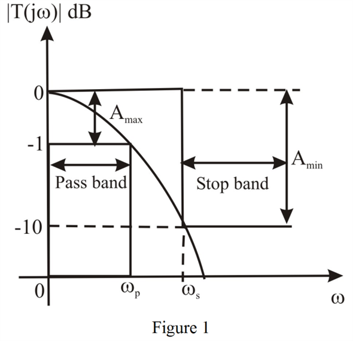

Step 1:
Consider the general characteristics of a low-pass filter shown in Figure 1.

Step 2:
The maximum allowed attenuation in the passband is,
The minimum required attenuation in the stop band is,
,
The time constant of the RC low pass filter is 1 sec and the dc transmission also unity.
The transfer function of RC low pass filter is,

The magnitude is,
Step 3:
At the edge of the passband the magnitude is,
…… (1)
It is known that,
…… (2)
Equate equations (1) and (2).
Thus, the value of is .
Step 4:
At the edge of the stopband:
…… (3)
It is known that,
…… (4)
Equate equations (3) and (4).
Step 5:
Simplify further.
Thus, the value of is .
Step 6:
The selectivity factor is,
Thus, the selectivity factor is .